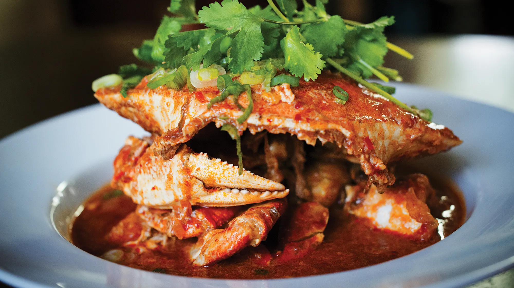

Home

Chilli crab is a Southeast Asian seafood dish that is most famous in the cuisines of both Malaysia and Singapore. The widely known version of chili crab today could be traced back to the 1950s in Malaysia and Singapore.
Ingredients
- Fresh crab
- Taucu paste
- Fresh chillies
- Eschalot
- Ginger and garlic
- Roasted belachan shrimp paste
- Ketchup
- Sweet chilli sauce
- Tomato passata or puree
- Egg
- Vinegar
- Green onion and coriander / cilantro
Steps
- Place taucu paste, fresh chillies, eschalot, ginger and garlic in a small food processor or Nutribullet. Blitz until it’s a paste
- Remove the belachan from the packet (it comes in little blocks) and roughly chop.
- Heat oil in a large pot over medium-high heat. Add belachan and cook for 2 minutes, stirring constantly.
- Add chilli paste and cook, stirring, for 3 minutes.
- Add tomato passata and cook, stirring regularly, for 4 minutes.
- Add sweet chilli sauce, ketchup, water and stir to combine. Bring to simmer.
- Put the claws in the pot, and stir to coat in sauce. Bring to a boil, then reduce heat to simmer. Cover with lid and cook 3 minutes.
- Remove lid, then add the reserved tomalley (“crab mustard”) along with all the crab juices.
- Add all the remaining crab parts, as well as any juices that are in the bowl.
- Stir well to coat, put the lid back on and cook for 7 minutes.
- Use tongs to remove all the crab pieces and transfer them to a bowl.
- With the sauce still on the stove, while stirring in a circular stirring motion, pour the egg in a thin stream into the middle of the pot. This will create little ribbons of cooked eggs the sauce.
- Finally stir in vinegar.
- Return the crab pieces to the pot.
- Gently stir to coat all the crab pieces in the sauce.
- Transfer and arrange crab pieces in a large, shallow serving dish.
- Pour over all the sauce.
- Garnish with fresh coriander/cilantro and green onion.
- Dive in and devour while it’s hot and fresh!